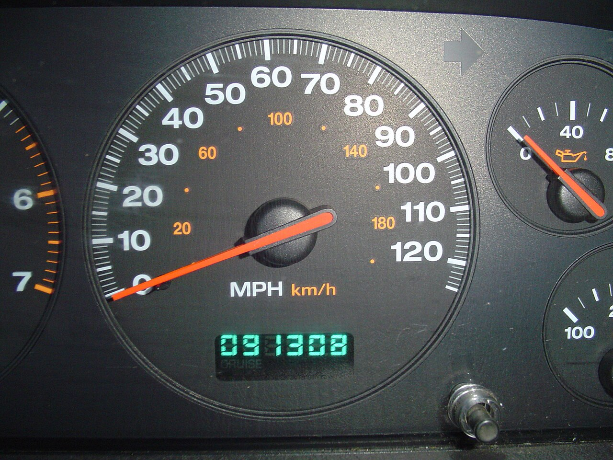
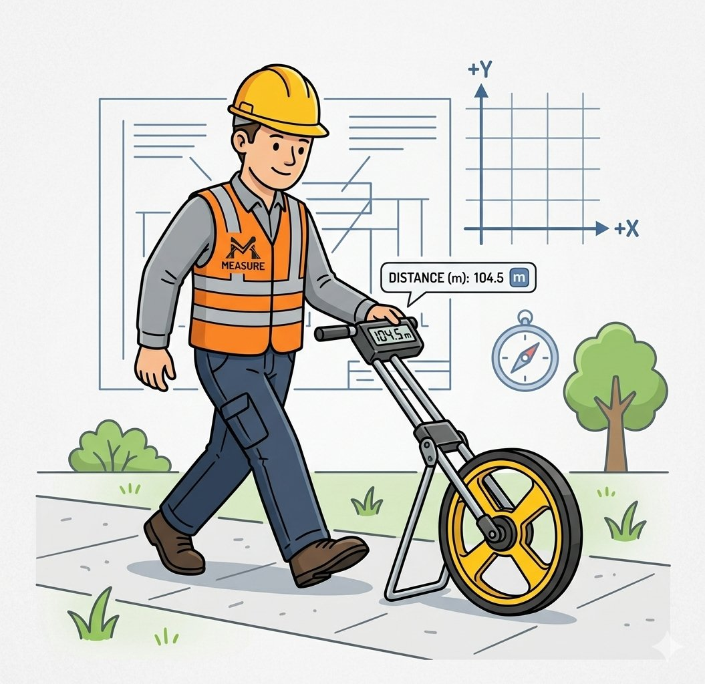
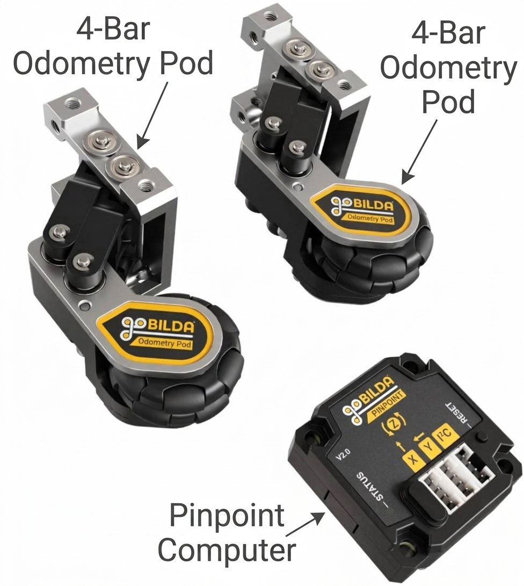
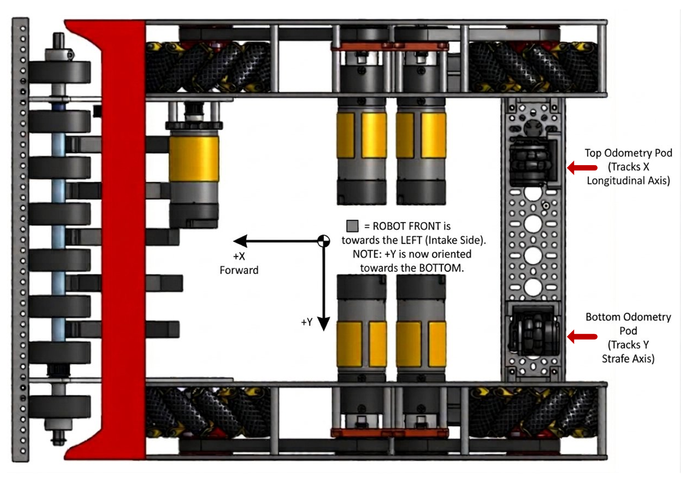
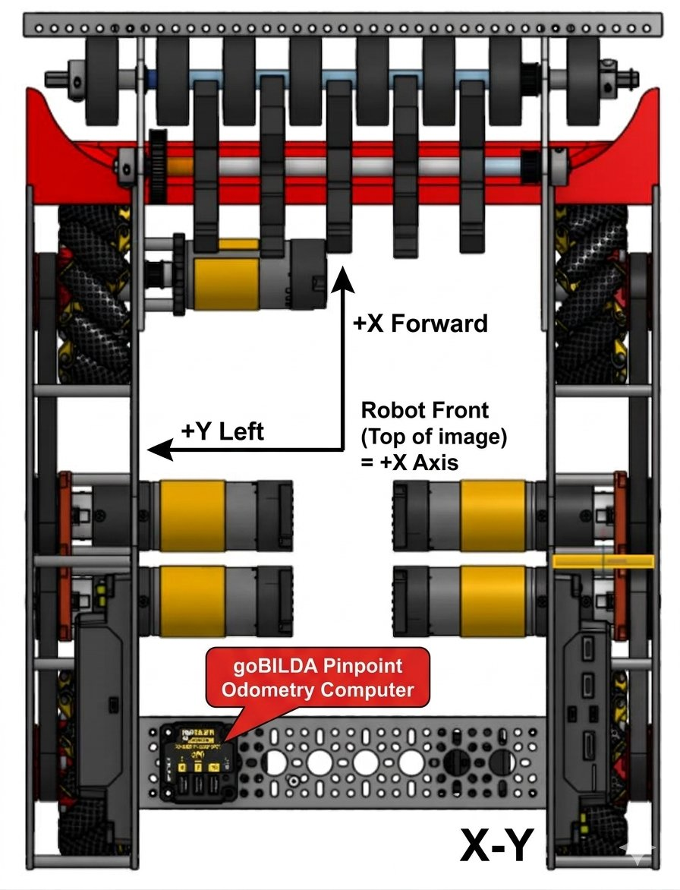
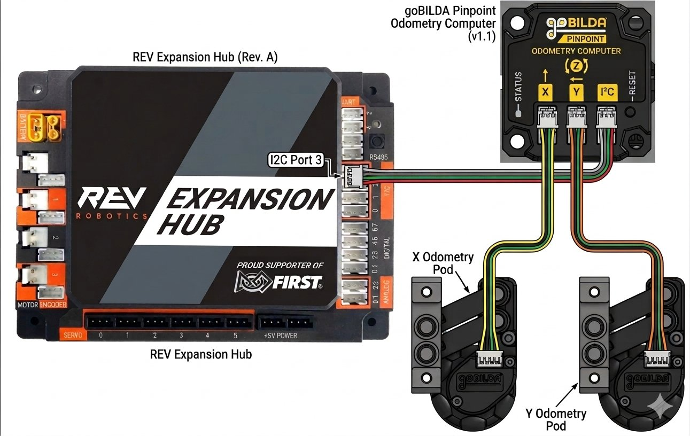

Your robot can already feel which way it's facing — the IMU gives you a heading. But ask it “where are you standing on the field?” and it has no clue. In this lesson you give the robot that missing sense: localization, the ability to track its own position as it drives.
To describe where a robot is, you need three facts bundled together — a pose:
x — how far forward or back from the start (inches)y — how far to the side (left or right) of the start (inches)heading — which way it's facing (an angle)That's the same idea as a point on a graph in math class: (x, y) tells you the spot, and the
heading is the direction of an arrow drawn on it.
Odometry is a big word for a simple idea: figuring out how far you've traveled by counting how much your wheels have turned. You already use one every time you ride in a car — the odometer.

Every time a tire makes one full turn, the car rolls forward by the distance around the tire. The odometer just keeps multiplying: turns × tire size = distance. It never sees a road sign or a map — it only feels its own wheels spinning, and from that alone it knows you've driven 91,308 miles.
Surveyors and construction crews use the exact same trick with a measuring wheel. Roll it along the ground and a counter ticks up the distance — no tape measure needed.

Odometry turns wheel spin into distance. And if you track wheels pointed in two different directions plus which way you're facing, you can do better than just “how far” — you can figure out exactly where you are on the field. That's localization.
Our robot does this with a goBILDA odometry set — three parts that work together: two tracking wheels and one small computer that reads them.

pose — your x,
y, and heading. The two pods plug into it, and it plugs into the robot's hub.Why unpowered “dead wheels”? They aren't driven by any motor — they just coast
along. Because nothing is pushing them, they roll cleanly without the slipping and skidding that powered drive
wheels do, so their count is far more trustworthy. As the robot moves, the Pinpoint quietly adds everything up and
keeps a running pose. Your job is not to do that math — the sensor does it. Your job is to
read the answer and share it with the rest of the robot.
A Pinpoint is like a stopwatch on the wall: it's always running, but the number you remember only
changes the moment you glance at it. In code, “glancing” is calling pinpoint.update(). If you
forget it, every reading is frozen at the last value. So read once, at the top of every loop —
the exact same rhythm the scheduler already uses.
Here's the puzzle. One dead wheel can only measure motion along the line it points. A pod aimed straight forward measures forward-and-back beautifully — but if the robot slides sideways (mecanum wheels can strafe!), that pod barely turns and misses the whole sideways trip.
The fix is two pods mounted 90 degrees apart — one lined up forward/back, the other lined up side to side. Together they catch any motion, because every direction on the floor is just some forward part plus some sideways part (remember the right triangle from the pose block!).

Think of a graph's two axes. One pod answers “how far forward?” and the other answers “how far sideways?” Two numbers that don't overlap can describe any spot on the field. If the pods were parallel (both forward), you'd get the forward answer twice and never learn the sideways one.
Each pod rides on a spring-loaded 4-bar arm so its wheel stays pressed to the floor over bumps. Keep each pod square to the robot (truly forward or truly sideways, not tilted), mounted low, and clear of the drive wheels. A crooked pod quietly mixes forward and sideways together and throws off every reading.
For the numbers to mean anything, everyone has to agree which way is “positive.” goBILDA (and Pedro Pathing, coming next lesson) all use the same convention, measured from wherever the robot booted up:
x counts up.y counts up (so strafing right
makes y go down).
It feels backwards at first — on a math worksheet, right is usually positive. But robotics uses this frame everywhere so that forward, left, and counter-clockwise all agree with each other. Once you learn it here, the same rule works in Pedro Pathing, in autonomous, and on the field.
The Pinpoint talks to the Control/Expansion Hub over a bus called I2C (say “I-squared-C”). It has three little ports labeled X, Y, and I2C: the two odometry pods plug into X and Y, and one cable runs from the Pinpoint's I2C port to a free I2C port on the hub.

Every REV hub has a hidden guest already living on I2C Port 0: the hub's own built-in IMU (the gyro that gives you heading). If you plug the Pinpoint into Port 0 too, two devices try to talk over the same wire and step on each other — readings get scrambled or the Pinpoint won't be found at all. Use Port 1, 2, or 3 instead. Our wiring uses Port 3, and the configuration file must name that same port.
Whatever port you physically plug into, the robot's configuration must list the Pinpoint on that same port with the same name your code asks for. Wiring and config always have to agree — a mismatch is the most common reason a Pinpoint “disappears.”
The pods are mounted 90° apart, the axes make sense, and the I2C cable is on a safe port. Now the fun part:
teaching the robot to read all that. Good news — Localization is just another
subsystem, the same shape you built for the intake and dumper. It implements Subsystem,
so the scheduler calls its update() for you every loop.
Localization.javaA new file appeared: Localization.java. Open it and read the top. The pinpoint field, the
latestPose field, and the constructor are already written. The constructor finds the sensor, describes
its tracking wheels, and zeroes it — and it uses the same null-guard you've seen before, so a robot
without a Pinpoint simply does nothing instead of crashing. Two pieces are missing, and you'll add them.
The Pinpoint — and Pedro Pathing, coming next lesson — use one standard field frame. Starting from where the robot booted up:
x counts up (+X is forward)y counts up (+Y is left, so moving right makes y go down)heading counts up (CCW is positive)Here's the catch: each dead wheel only knows how far it rolled, not which way you call that
direction. So the constructor tells the Pinpoint the sign of each pod with
setEncoderDirections(...). On our robot the strafe pod was mounted so that moving left
made y count the wrong way — so its direction is set to REVERSED to put +Y back on the
left where Pedro expects it. The forward pod was already correct, so it stays FORWARD.
Sanity-check any real robot once: push it forward, push it left, and spin it counter-clockwise,
and confirm x, y, and heading each go up. If one reads backwards, flip only
that pod's FORWARD/REVERSED in the constructor — no rewiring and no moving the pod.
Inside update(), first bail out if there's no sensor (the null-guard), then take one fresh reading and
store it in latestPose. That's the whole job — and it returns instantly, so the robot never stalls.
Localization.java⩢ Copyif (pinpoint == null) {
return; // no sensor -- nothing to read
}
pinpoint.update(); // pull the newest numbers over the wire
latestPose = pinpoint.getPosition();That early return is a logic guard: “if there's nothing to do, stop right here.” It
keeps the rest of the method simple, because after that line you know pinpoint is real and safe
to use. Checking the special case first and returning is a habit that keeps code from crashing.
The rest of the robot shouldn't poke at the Pinpoint directly — it should ask Localization polite
questions. Add these getter methods. Each one just reads a number out of latestPose in the
units the caller wants.
Localization.java⩢ Copypublic double getHeadingRadians() {
return latestPose.getHeading(AngleUnit.RADIANS);
}
public double getHeadingDegrees() {
return latestPose.getHeading(AngleUnit.DEGREES);
}
public double getXInches() {
return latestPose.getX(DistanceUnit.INCH);
}
public double getYInches() {
return latestPose.getY(DistanceUnit.INCH);
}
public double getDistanceFromStartInches() {
return Math.hypot(getXInches(), getYInches());
}Notice heading comes in two flavors. A full circle is 360 degrees — or, the way the math of motion prefers it, 2π radians (about 6.28). Neither is “more correct”; they're two units for the same turn, like inches and centimeters. Humans read degrees easily, so telemetry uses that; driving and autonomous math want radians. Asking the pose for the unit you need means no conversion mistakes in your own code.
getDistanceFromStartInches() answers “as the crow flies, how far am I from where I started?”
Picture a right triangle: one leg is x, the other is y, and the straight-line distance is the
hypotenuse:
distance = √(x² + y²)
Math.hypot(x, y) computes exactly that. So if the robot is 3 inches over and 4 inches up,
it's √(9 + 16) = √25 = 5 inches from home — the classic 3-4-5 triangle, live on your robot.
Just like every subsystem, Robot needs to know about it — two small edits.
Robot.java⩢ Copypublic final Localization localization;That second line is what makes robot.update() call localization's update() every loop —
without it, the pose would never refresh.
Robot.java⩢ Copylocalization = new Localization(hardwareMap);
subsystems.add(localization);Now show it off. In the OpMode's telemetry, add a few lines that report what localization knows. Because
robot.update() already refreshes the pose at the top of the loop, these always show the latest numbers.
MecanumDrive.java⩢ Copytelemetry.addData("Has Pinpoint", robot.localization.hasPinpoint());
telemetry.addData("Heading (deg)", "%.1f", robot.localization.getHeadingDegrees());
telemetry.addData("Position (in)", "x %.1f y %.1f",
robot.localization.getXInches(), robot.localization.getYInches());
telemetry.addData("Distance from start (in)", "%.1f",
robot.localization.getDistanceFromStartInches());"%.1f" trickRaw sensor numbers have a long tail of decimals, like 12.837401…. The "%.1f" is a
format string: it rounds to one digit after the point (12.8) so the driver-station screen
stays clean and readable while the robot is moving.
Localization.java, fill in update() to read the Pinpoint each loop.getDistanceFromStartInches().Robot.java, declare and build localization (both lines!).MecanumDrive.java, add the telemetry lines.x, y, and heading change as you move. Check the signs: forward makes x go up,
strafing left makes y go up, and turning counter-clockwise makes heading go up.0.Your robot now knows where it is, not just which way it faces. That's the missing ingredient for a robot that can drive itself — and driving to a spot on its own is exactly where we're headed with autonomous next.